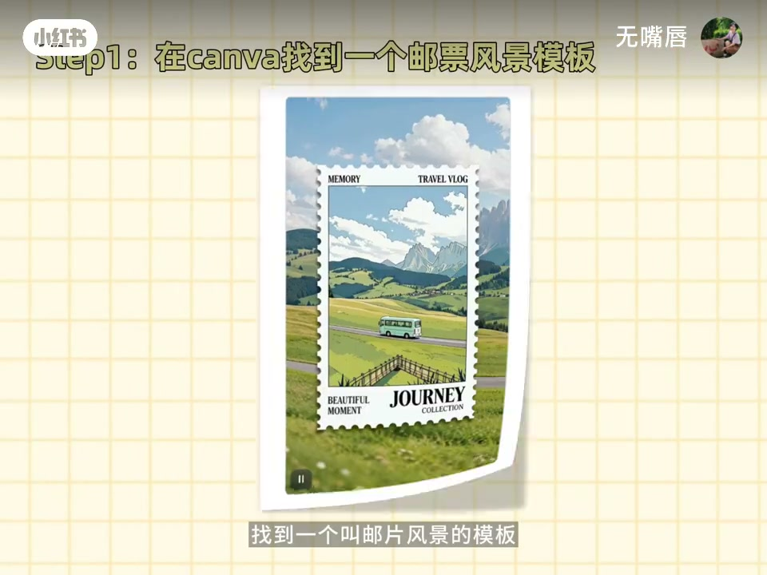
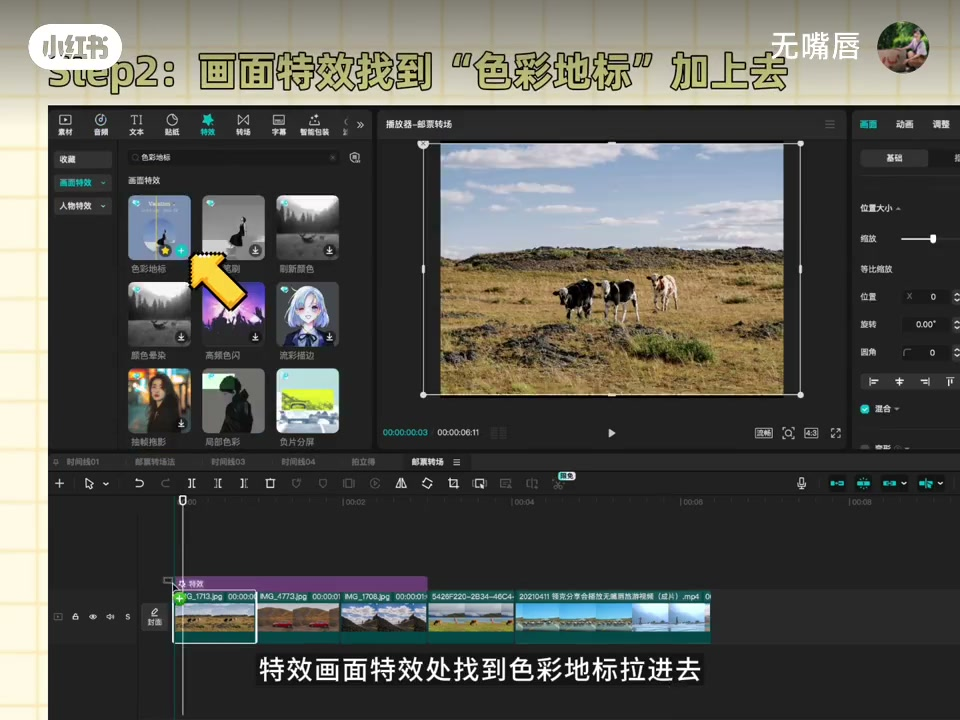
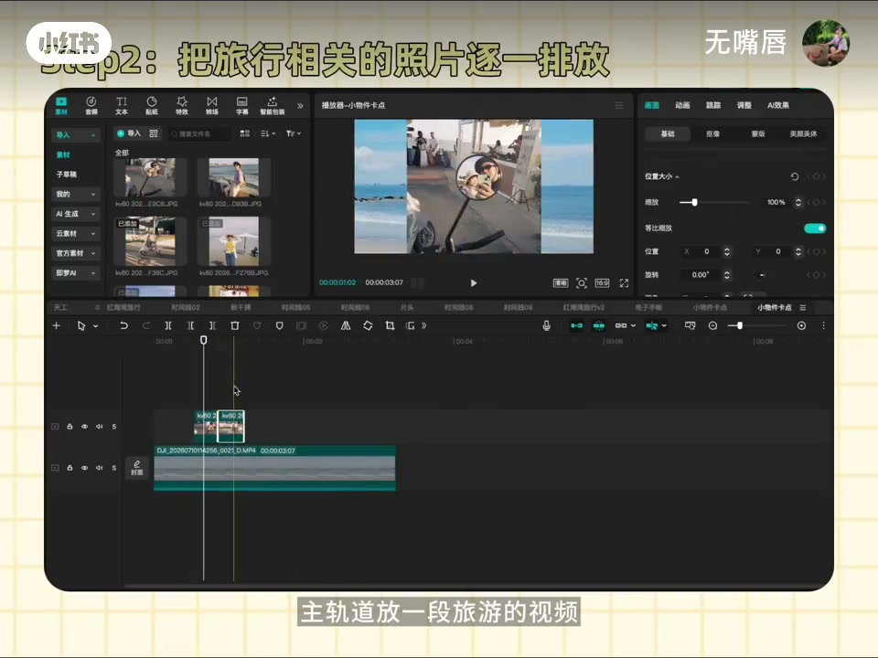
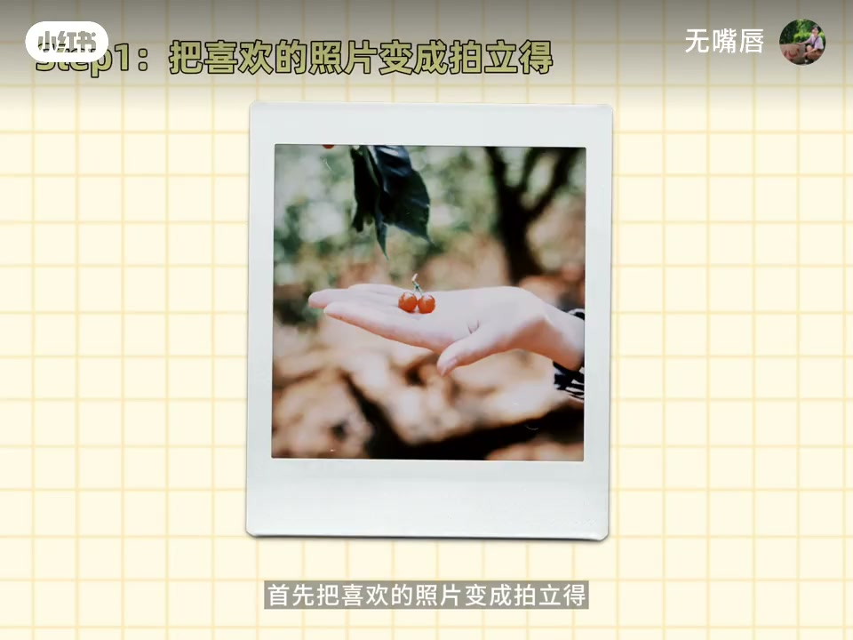
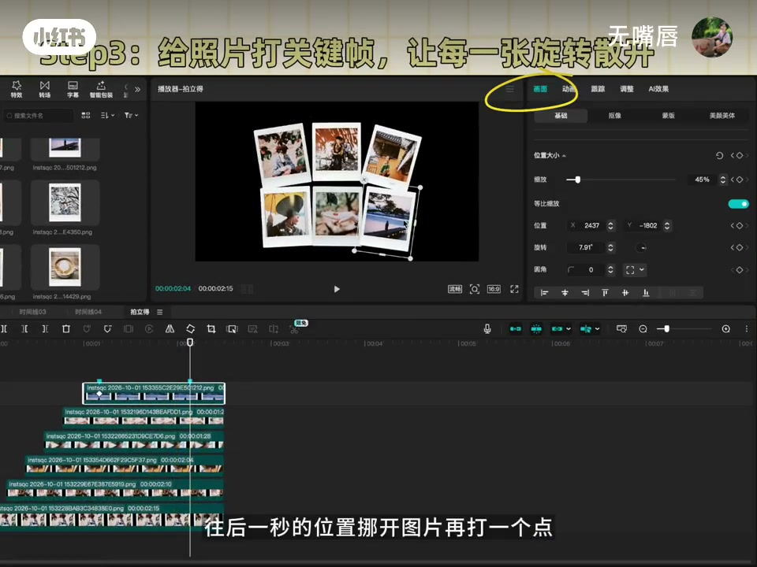

内容要点
「无嘴唇」针对「照片一大堆、视频素材少」：用四招把静照做成动态旅行短片——邮票风景模板、色彩地标切片、照片三帧卡点叠实拍、拍立得阶梯散开片头。步骤按剪辑界面口述，可跟做。
知识结构
邮票风景模板拖图导出；实景与AI图并置做出邮戳转动感。
特效「色彩地标」按张切开才能跟照片变色；可拖颜色识别；加向左转场与音效。
主轨放旅行视频，照片每张三帧，抠图加字，跟强节奏音乐卡点。
拍立得样式阶梯排布，关键帧散开加旋转，贴纸手写字收尾，后接随手视频。
旅行vlog不一定缺素材，缺的是把照片「动画化」的四套模板动作。
00:00-01:17邮票、色彩地标与三帧卡点
第一招：找到「邮票风景」模板，图片拉进去导出；剪辑时可把实景和AI图放一起，形成邮戳转动效果。第二招：旅行图一张张排开，在画面特效里拉「色彩地标」——若整段从头拉到尾色彩会糊成一种，必须切开，让它按每张照片生成色彩；不喜欢就在颜色识别里拖拽更换，图与图之间加向左转场和音效做出滑动。
第三招：主轨道放一段旅游视频，照片叠在上面每张三帧，抠图调大小加文字，重点选节奏感强的音乐让画面卡点。



01:17-02:06拍立得阶梯散开片头
第四招：先把喜欢的照片做成拍立得样式；每张单独一条轨道阶梯排列，一次出现。然后做散开：每张开头打点，约一秒后挪开再打点，并加一点旋转让动画自然——口播提醒这步要耐心。
散开处加入主题字，可用贴纸/手写字素材；图片后面接随手拍视频，一个拍立得片头就完成。片尾导流其他创意剪辑方法。


完整转录（38段）
以下文本由 Whisper medium 模型自动转录，可能存在少量识别误差，已尽可能修正。
旅行回来,照片一大堆,视频素材却少了可怜
这个方法帮你把照片做成好玩的旅行短片
这种动态邮票效果怎么做呢?很简单
找到一个叫邮票风景的模板
直接把图片拉进去,导出来就做好了
剪辑时候呢,可以把实景和AI的放在一起
就是一个邮镜转动的效果
是不是还蛮好玩的?
色彩地标效果怎么做呢?
把旅行的图片一张张排放
特效,画面特效处,找到色彩地标,拉进去
注意,这个特效如果这样从头拉到尾,色彩则会出现一种
我们要把它切开,它就会根据我们的照片去生成色彩
这样子呢,就有一个色彩变化的过程啦
不喜欢的话,可以在颜色识别这里拖拽,就会更换色彩
图与图之间呢,加入一个向左的转场和音效
就有滑动效果了
主轨道放一段旅游的视频
把照片拉到主轨道上面,每张三帧
勾图,调整图片的大小,加入文字
重点是选一个节奏感强的音乐,画面跟著音乐卡点
完成啦,是不是很简单
拍立得装产,怎么做呢?
首先,把喜欢的照片变成拍立得
每张照片单独放一条轨道,像阶梯一样排列
这样照片就可以一次出现
接下来做一个图片散开的效果
每一张,开头打一个点
往后一秒的位置,挪开图片再打一个点
为了让动画更自然,可以增加一点旋转
每一张都重复操作,这一步耐心一点
在图片散开的地方,加入主题
可以带贴纸收Vlog,会有很多好看的手写字,直接用
图片后面可以加上随手拍的视频
这样一个拍立得片头就做好啦
之前还分享了很多好玩的创意剪接方法
感兴趣的朋友可以去看看
我们下期见,拜拜